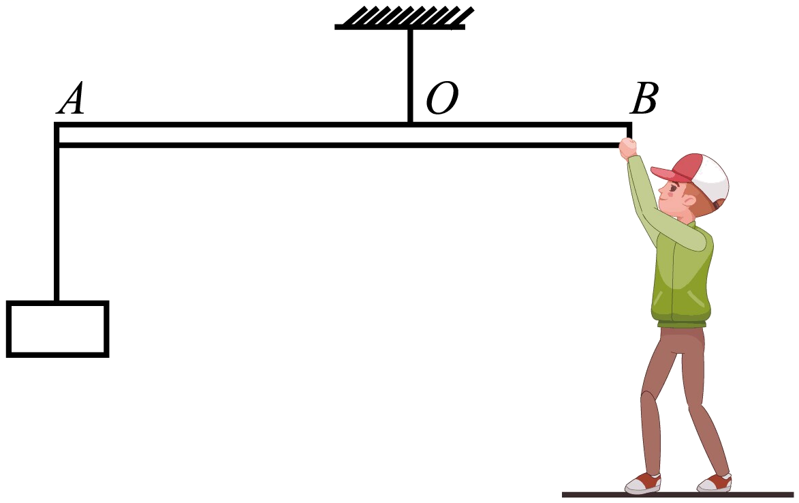
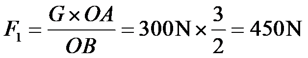
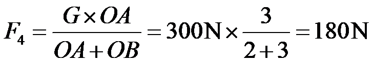
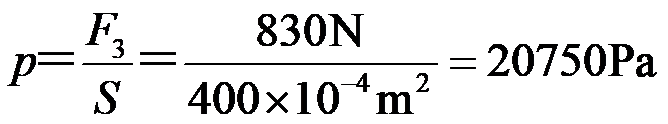

2023年北京中考物理 第12题 解析
12. 如图是小强利用器械进行锻炼的示意图，其中横杆AB可绕固定点O在竖直平面内转动，OA∶OB=3∶2，在杆A端用细绳悬挂重为300N的配重，他在B端施加竖直方向的力F1，杆AB在水平位置平衡，此时他对水平地面的压力为F2。为了锻炼不同位置的肌肉力量，他将固定点移动到A端，杆AB可绕端点A在竖直平面内转动，配重悬挂在O点，在B端施加竖直方向的力使杆AB在水平位置再次平衡，此时，他对水平地面的压力为F3，压强为p。已知小强重为650N，两只脚与地面接触的总面积为400cm²，不计杆重与绳重，下列判断正确的是（ ）

A. F1为200NB. F2为1100N
C. F3为830ND. p为11750Pa
【答案】C
【解析】
【详解】A．已知OA∶OB=3∶2，根据杠杆平衡条件F1l1=F2l2得
F1 ×OB =G×OA
即

故A错误；
B．他对水平地面的压力为
F2=G人- F1=650N -450N =200N
故B错误；
C．将固定点移动到A端，杆AB可绕端点A在竖直平面内转动，配重悬挂在O点，在B端施加竖直方向的力，使杆AB在水平位置再次平衡，小强对B端施加力的方向应竖直向上，该力大小

根据力的作用是相互的，则此时B端对小强施加力的方向竖直向下，该力大小
F4ʹ= F4=180N
他对水平地面的压力
F3=G人+ F4 ʹ =650N+180N =830N
故C正确；
D．此时他对水平地面的压强

故D错误。
故选C。
二、多项选择题（下列每题均有四个选项，其中符合题意的选项均多于一个。共6分，每题2分。每题选项全选对的得2分，选对但不全的得1分，有错选的不得分）